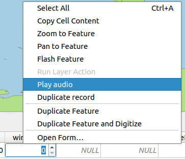
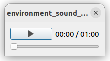
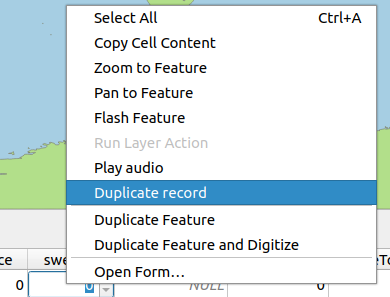
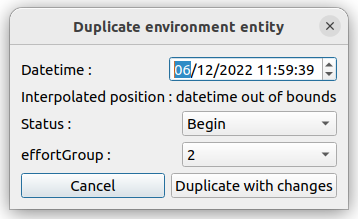
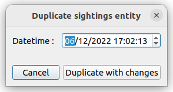

Action
Two actions are created by default in the project session.
Audio play action
For each environment/sightning/follower entity, Sammo-boat records an audio track. This track can be play using the audio play action that is available by doing a right click on a entity.
It opens a minimalist audio player to listen the track.
Duplicate action
This action is used to duplicate a environment/sightning/follower entity. As the audio player, it is available by doing a right click on a entity.
For the environment table, it opens the following dialog:
User can modify the datetime of the duplicat. From this datetime, the entity geometry will be determined by interpolating the closest gps points. Futhermore, user can modify the status and the effortGroup attributes (cf. 11 - Environment table) in order to fix missing environment entities. Other attributes can be modified in the environment table.
For sighting and follower tables, it opens the following dialog:
User can only modify the datetime of the duplicat in order to interpolate geometry from the closest gps points.